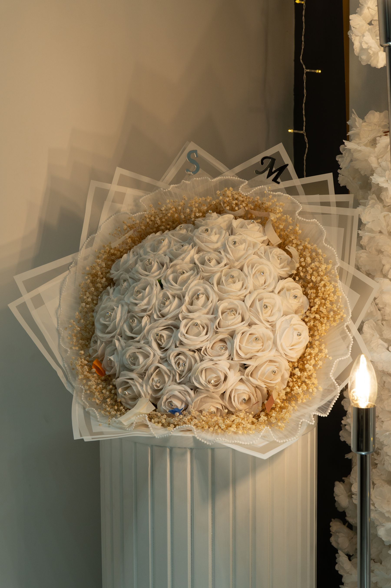
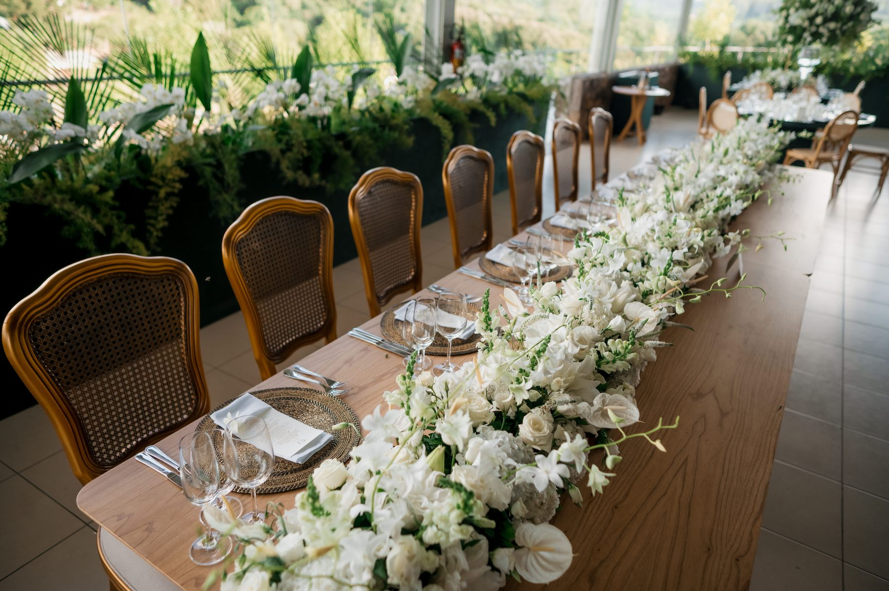
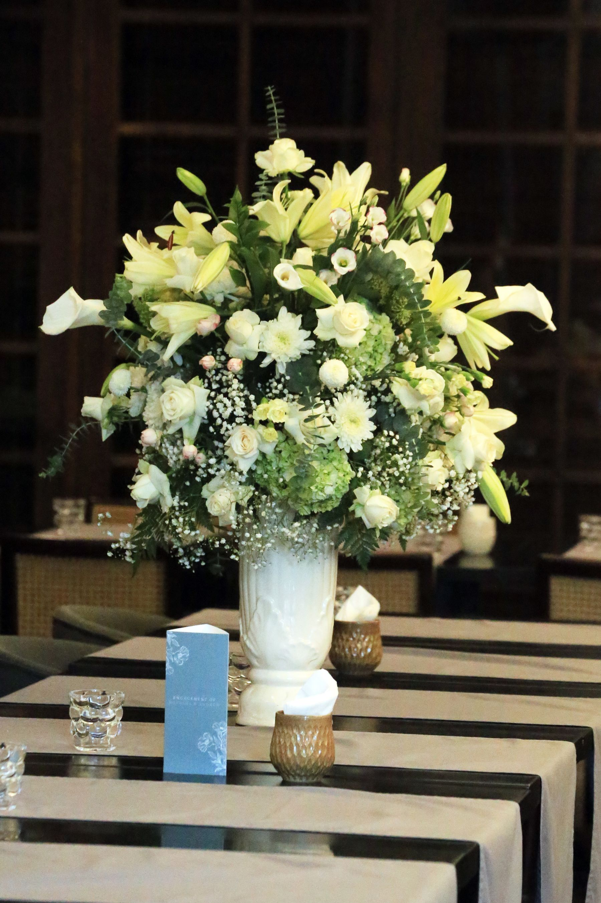
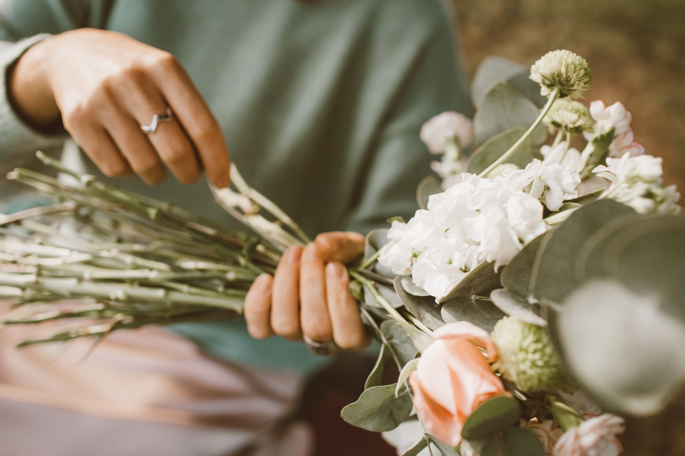

01 / Regalar
Ramos y bouquets
Ramos de mano atados a mano, con flores de temporada y una presentación cuidada hasta el último detalle.
Consultar ramos →
Ramos y arreglos hechos a mano con flores frescas, pensados para acompañar tus momentos más especiales en el corazón del Cauca.
En Flores de Popayán creemos que cada arreglo debe decir algo. Seleccionamos flores frescas, combinamos texturas y tonos con intención, y diseñamos piezas que se sienten tan especiales como el momento que las inspira.
Trabajamos con clientes de Popayán y alrededores: ramos para regalar, centros de mesa para celebraciones, flores para bodas y arreglos de condolencia que acompañan con respeto.
Hecho con flores, hecho para ti.
Cuatro formas de regalar flores. Cuéntanos qué ocasión celebras y diseñamos algo único para ti.

Ramos de mano atados a mano, con flores de temporada y una presentación cuidada hasta el último detalle.
Consultar ramos →
Piezas para el hogar, la oficina o eventos: composiciones equilibradas que transforman cualquier espacio.
Consultar arreglos →Ramos de novia, decoración de ceremonia y recepción. Diseñamos toda la floración de tu boda contigo.
Cotizar bodas →Arreglos sobrios y respetuosos para expresar tu apoyo en momentos de duelo, con entrega puntual.
Consultar arreglos →
Somos un emprendimiento florista nacido en Popayán. Cada pedido se prepara de forma artesanal, escuchando lo que necesitas y eligiendo las flores que mejor cuentan tu mensaje.
Escríbenos por WhatsApp y dinos la ocasión, tus preferencias y la fecha.
Elegimos las flores y armamos una propuesta única para ti, con presupuesto claro.
Preparamos tu arreglo con cuidado y lo llevamos hasta tu puerta en Popayán.
“Un ramo no es solo un regalo: es un momento que se vuelve memoria.”
Escríbenos para cotizar un ramo, coordinar flores para tu boda o pedir un arreglo especial. Respondemos con gusto todos los mensajes.
Estamos en Popayán. Si vienes a vernos, avísanos antes para tener todo listo para ti.